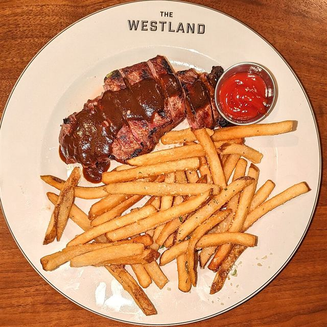
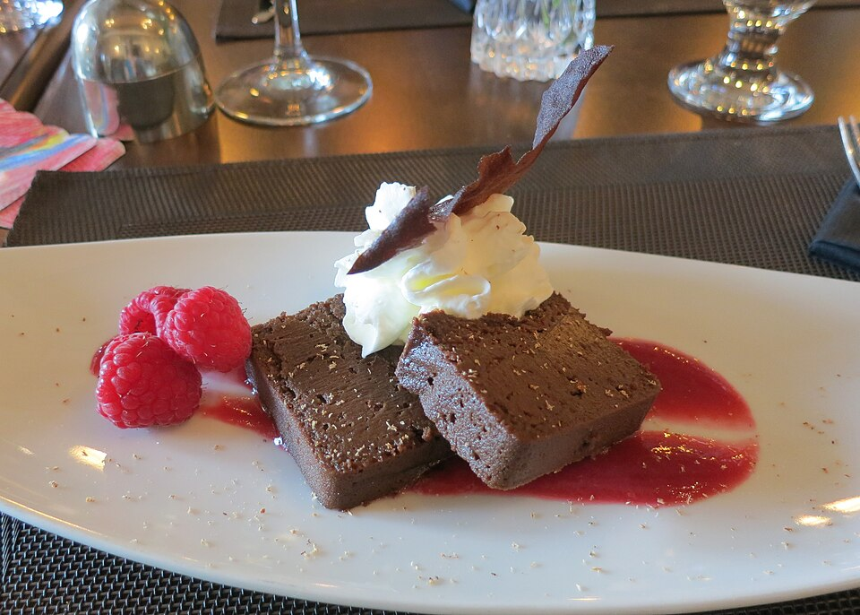
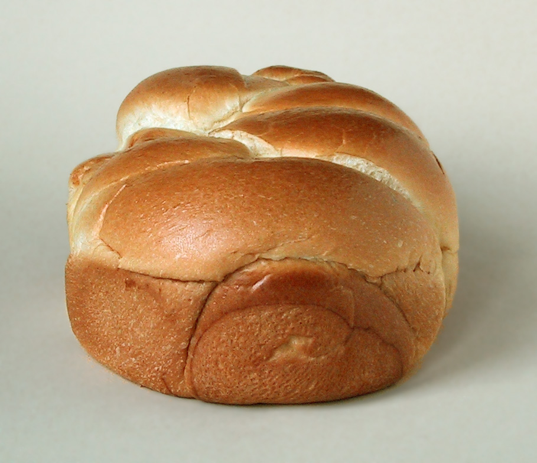

Le couvert is the place setting: the plate, the glass, the knife and the fork. It is what makes it possible to eat at all. Today we lay the table for every guest: the one with a mouse, the one with a keyboard, and the one who listens to the screen.
Theme
Accessible UI and shadcn/ui
Le Bistro today
A cart you can use with a keyboard, dialogs, a menu
Your project
v1.0 · the last version of the track
Length
2 hours · one break

le couvert“everything in its place”
Le Bistro · L36 · 120 minutes
Today's menu
AccueilHello where Le Bistro is today3′
ApéritifQuestions and two homework demos8′
EntréeProblem 1 put the mouse away5′
PlatUsable without a mouse focus, dialogs, names: by hand24′
AtelierClasswork 1 your shop without a mouse15′
Pause caféBreak music on, screens off10′
Second platProblem 2 and a UI kit shadcn/ui, Radix, tokens27′
AtelierClasswork 2 with AI prompt it, then check it15′
MasterclassOne prompt, the whole Le Bistro CRAFT, then the short version8′
DessertWrap-up recap, final homework, ten lectures5′
React Hook Form and Zod. A sign-up and a table slip.
L34 · done
Cache
TanStack Query. The menu is fetched once.
L35 · done
Changes
Orders, optimistic buttons, endless lists.
L36 · today
UI for everyone
A cart for the keyboard, dialogs, shadcn/ui.
Your projectv0.6 ✓a store, not a providerv0.7 ✓forms with a schemav0.8 ✓a cache for the APIv0.9 ✓orders and optimistic UIv1.0 · todaya UI everyone can use
Today's goal Press next to unveil it
A cart for every guest
Under the blind: the cart as a plain div, and as a Sheet. Red goes, green comes.
Why invalidateQueries({ queryKey: ["orders"] }) and not refetch() in onSuccess?
refetch() refreshes one query, by name: the screen you forgot stays old. invalidateQueries says what changed, and every screen that shows it follows.
02
What does cancelQueries protect against in an optimistic update?
A refresh that was already on its way: it would land after our change and put the old status back for a moment.
03
Why does our toast have role="alert" for errors and "status" for the rest?
A screen reader reads an alert at once and a status politely, when it is free. A toast with no role is invisible to a guest who cannot see it.
Homework check Two volunteers, two minutes each
Show us your v0.9
Press "Place order" twice, quickly: how many requests in the Network tab? Then break the URL for a minute: what does the guest see?
Look for
One POST for two presses
invalidateQueries, and no refetch() inside onSuccess
A failed request shows a toast
The optimistic heart flips back on an error
The live Vercel link works
Entrée · Problem 1 Before the new tool
Put the mouse away.
Can a guest who cannot use a mouse, or who cannot see the screen, order a dinner from Le Bistro? Try it. Tab, Enter and Esc. Nothing else.

Problem 1 Click the page once, then use only Tab, Enter and Esc
Order a dinner without a mouse
Problem 1 The same cart, checked three ways
Three tools, three kinds of problems
The linter · reads the code
0warnings
npx oxlint --jsx-a11y-plugin finds no div onClick: every control is a real button or link.
axe-core · reads the page
2rules violated
color-contrast: the small brass labels are 3.04:1, and 4.5:1 is needed. page-has-heading-one: the menu has no h1.
You · press the keys
4/4checks fail
The focus stays on the button, Tab leaves the cart, Esc does nothing, and closing it loses the focus.
What a screen reader gets from the open cart (the browser's accessibility tree):- navigation: link "Menu" · link "FAQ" · button "Your order · 1"← open or closed? It does not say- complementary:← a landmark with no name, not a "dialog"
- heading "Your order" [level=2] · button "Close" · list · …
Each tool sees what the others cannot
Run all three. The third one is free, and it takes ten minutes.
Problem 1 Your turn
What would we need?
Open it: the focus moves inTab stays inside itEsc closes itClose it: the focus goes backA role and a name for a screen readerThat is a dialog
The pageThe dialog
Your order · 1the button that opened it
Your order · 1the focus is back here
The rest of the pagelinks, filters, dish cards
2 · Tab cannot get here
3 · Esc closes it
dialogOne less · One more Remove · Close
role="dialog"name: “Your order”
focusfocus
Solution 1 By hand, first
Four rules, and a name
The focus moves in
Open it with the keyboard, and the keyboard is already there.
Tab stays inside
The page behind is out of reach.
Esc closes it
The one way out that works for everybody.
The focus goes back
To the button that opened it.
A role and a name
dialog, “Your order”: what a screen reader says.
Solution 1 The first rule of ARIA: if a native element does the job, use it
Use the browser's own parts first
A button is a buttonIt takes the focus, answers Enter and Space, has a role and a name. A div with onClick has none of it, and the linter says so.
A dialog is a dialogshowModal() does the four rules for you. We tried it in Chrome: the focus moves in, Tab stays inside, Esc closes, the focus returns, and the page behind ignores clicks.
Then add what it does not giveA look, animation, a menu with arrow keys and typeahead, the same behaviour in every browser. That is where a library comes in.
Solution 1 · Recipe Type it with me, step by step
The skip link and the ring
The first stop of the pageA link to the content, before the header. A keyboard user presses Tab once and Enter, and the five stops of the header are behind them.src/layouts/SiteLayout.tsx
A target that can take the focustabIndex={-1}: code can focus it, but it is not a Tab stop. No ring on the page itself.
Hidden until it has the focusOff screen for the eye, but not for the keyboard. On focus it appears at the corner.src/index.css
Keep a focus ring you can seeThe browser draws one. Give it a colour from a token, and never remove it without a replacement.
Solution 1 · Recipe The four rules, in code
A dialog by hand
The focus moves inAnd we remember where it was.
Esc closes itOne key, one line.
Tab walks in a circleAt the last control, Tab goes to the first. At the first, Shift+Tab goes to the last.
On the way out, the focus goes backIn the cleanup of the effect.
Straight under <body>A portal, with a role and a name.
Solution 1 What the screen reader gets: switch the attributes on and off
A role and a name
A name needs a role
aria-labelledby on a plain div is ignored: nothing to name.
A role needs a name
A nameless dialog says just “dialog”. Which one?
aria-modal is a promise
It hides the page for the screen reader. It does not trap the keyboard.
Solution 1 Switch the rules on, one at a time, and run the test
Leave one out
Solution 1 The four mistakes you will see today
When the page cannot be used
A div that behaves like a button
<div onClick={open}>Your order</div>
jsx-a11y(click-events-have-key-events) · Visible, non-interactive elements with click handlers must have one of `keyup`, `keydown`, or `keypress` listener.
A <button type="button">: focus, Enter, Space, a role, a name
The ring removed, and nothing in its place
outline-none · button:focus { outline: none }
No error. A keyboard user cannot see where they are. Fine for you with a mouse, a disaster for them.
Keep it, or draw a better one: focus-visible:ring-3 focus-visible:ring-ring, and measure it
A tab order of your own
<button tabIndex={5}>Send</button>
jsx-a11y(tabindex-no-positive) · Avoid positive integer values for `tabIndex`. The button jumps the queue, in every page that uses it.
Write the elements in the order people read them. tabIndex={0} or {-1} only
A picture without words
<img src="coq-au-vin.jpg" />
jsx-a11y(alt-text) · Missing `alt` attribute. Must have `alt` prop, either with meaningful text, or an empty string for decorative images.
alt="Coq au vin", or alt="" when the text next to it already says it
Quick check Vote, then click
A dialog closes with Esc. Where should the focus go?
B: the guest continues where they were. A: they walk the whole page again, fifteen Tabs or more. C: "the browser decides" means the focus is lost to <body>, which is what our cart does today. D: nobody wants that.
Atelier · Classwork 1 15 minutes, on your own project
Your shop without a mouse
Baseeveryone
A way past the header
A skip link before the header, and <main id="main" tabIndex={-1}> as its target.
Run npx oxlint --jsx-a11y-plugin -D jsx-a11y src and fix every warning (a div becomes a button, a picture gets its alt).
Plusmost of you
Esc, and a way back
Your cart closes with Esc, and the focus goes back to its button (keep the button in a ref).
Profast finishers
The focus goes in, and stays
The focus moves into the cart when it opens, and Tab stays inside. Take HandMadeDialog from code/after-L36/src/examples/, or use a native <dialog> with showModal().
Done when
The skip link is the first Tab stop, and Enter moves you into the content
Enter opens the cart, and the focus is inside it
Esc closes it, and the focus is back on its button
Stand up, refill, rest your eyes. After the break: three more requests from the owner, and a kit that does the hard part for us.
Second plat · Problem 2 The cart works
Three more requests.
The owner is happy, and wants three more things: ask before emptying the order, a quick look at a dish without leaving the menu, and one account button instead of four links. And everything must look like Le Bistro.

Problem 2 Click each widget: the keyboard rules it must follow
Each request has its own rules
Problem 2 Your turn
What would we need now?
The behaviour, written once and tested by expertsParts without a look: we style themOne place for our coloursCode we can read and changeThat is shadcn/ui, on Radix
Solution 2 Who owns the behaviour, who owns the look, who owns the code
Three kinds of UI libraries
1 · Ready-made kits
MUI · Mantine · Ant Design
You get finished components with their own look.
You own nothing: it lives in node_modules.
The catch bending the look takes effort, and an upgrade can change your UI.
2 · Headless primitives
Radix UI · React Aria
You get behaviour and accessibility, with no style at all.
You own your markup and your CSS.
The catch you must style and assemble every part.
3 · Copy-in components
shadcn/ui
You get components generated into your project, built on a headless base and Tailwind.
You own the files: read them, change them.
The catch you maintain them: no automatic updates.
Today: number 3
Le Bistro has its own look, and we want to read every line. There is no best one: a deadline favours number 1, a brand favours number 2.
Your project
npx shadcn@latest add dialog
ui/dialog.tsxyour file: read it, change it
radix-uifocus, keys, ARIA
Tailwind + your tokensthe look
cn · cva · lucideclasses, variants, icons
DishQuickLook.tsx<Dialog> … <DialogTitle>
dialog.tsx
Solution 2 The kit
A recipe book, not a package
The command copies a file
add dialog writes ui/dialog.tsx into your project. It is ordinary code.
Radix does the hard part
Focus, keys and ARIA, tested by its authors. Tailwind and your tokens do the look.
You use it, and you own it
Your components import <Dialog> from your own folder. The price: updates are yours to apply.
Solution 2 · Recipe Type it with me, step by step
Set up shadcn/ui
An alias: @/ means src/The CLI will not start without one. TypeScript needs it in two config files, and the dev server in vite.config.ts.tsconfig · vite.config.ts
Set it upTemplate vite, base radix, preset nova. It installs the packages and writes components.json.
Add what you needOnly these. Each one is a file in src/components/ui/.
Read what it madeIt also rewrote index.css with its colours. We will point them at Le Bistro in a minute.
Solution 2 Pick a colour: change one token, then read the numbers
cva · variants One function that returns the classes of the chosen variant and size. The old .btn and .btn-outline are now two variants.
02
asChild · Slot Renders your child with the button's classes and props, so a Link can look like a button without a <a> inside a <button>.
03
cn(…) Joins classes, and when two Tailwind classes fight, the last one wins. So className="w-full" from the caller works.
04
Using it The look is a prop, not a new CSS class. A new look is a new line in variants.
Solution 2 · Recipe Type it with me, step by step
CartSheet
A frame that knows the four rulesSheet, with open in our hands: we close it after the order is sent.src/components/CartSheet.tsx
Your button opens itSheetTrigger asChild: no extra button, the focus returns to this one.
A name and a descriptionSheetTitle becomes the dialog's name, and the description is read after it.
Your own contentThe lines, the total, the buttons: the old CartPanel, moved to CartContents.
dialog “Your order”the name, and a descriptionthe focus lands hereon the first controlout of reacharia-hidden, and clicks blocked
Solution 2 Nine lines of JSX, four rules
What Radix did for the cart
A role and a name
role="dialog", named by the title and described by the line under it.
The focus moves in
To the first control, "One less". 14 Tabs in a row never left the sheet.
The page behind
Hidden from screen readers, and the mouse cannot click it.
Leaving
Esc closes it, and the focus is back on "Your order".
Solution 2 · Recipe Two more windows, the same idea
A quick look, and "Are you sure?"
Dialog
The title is the accessible name, the description is read after it. A dialog with no title is just "dialog".
AlertDialog
A dialog that needs an answer. The focus starts on the safe choice, "Keep it". Esc cancels, and a click outside does not close it.
Solution 2 · Recipe One button, a menu you can drive without a mouse
UserMenu
EnterSpace↓open it; the focus goes to the first item
↑↓HomeEndmove (the arrows do not wrap)
a letterjump to the item that starts with it
Escclose it; the focus goes back to the button
Solution 2 · Recipe The last piece: the toasts, and the icons
Sonner replaces our toaster
Delete our toasterThe toast/ folder: a store and a component, 53 lines we wrote last time.
One component in the layout<Toaster /> from ui/sonner.tsx, the file shadcn made.
One import in two filesThe calls do not change: toast.success(…) and toast.error(…).
What we getA live region for screen readers, stacking, a close button, a promise toast. And icons from lucide-react.
Solution 2 Le Bistro, version 1.0
What the changes bought us, and what they cost
4/4keyboard checks passwas 0 of 4: focus in, Tab inside, Esc, focus back
0axe-core violationswas 2 rules: contrast and the missing h1
0lines of focus code we wrotethe hand-made dialog was 81 lines, for one dialog
+54 kBJavaScript, gzipped142 → 197 kB. L40 shows how to pay less: code splitting
Still yours
Alt text, labels, headings, contrast, a ring you can see. A library cannot know what your picture shows.
We found three today
The ring at 1.66:1, the pale menu highlight, the brass labels at 3.04:1. All were in our own code.
Test, do not hope
A linter, axe, and ten minutes with the keyboard. In L39 a computer will press the keys for you.
Solution 2 The four mistakes of the second half
When the kit does not start
init before the alias
npx shadcn@latest init -t vite -b radix -p nova
✖ Validating import alias. Could not find valid path aliases or package imports for init. Configure path aliases in tsconfig.json or imports in package.json, then run init again.
Add paths to tsconfig.json and tsconfig.app.json (and the alias to vite.config.ts), then run it again
The alias in one place only
import { useCartStore } from "@/cart/cartStore";
TS2307 · Cannot find module '@/cart/cartStore' or its corresponding type declarations. · dev server: Failed to resolve import "@/cart/cartStore" from "src/components/AddToCart.tsx". Does the file exist?
Three places: both tsconfig files for TypeScript, and vite.config.ts for the dev server
A dialog with no title
<DialogContent><p>Coq au Vin, 32</p></DialogContent>
No error, no warning. The accessibility tree says dialog and no name: a screen reader says "dialog" and nothing more.
Always a DialogTitle, and a description. className="sr-only" hides it from the eye if the design has none
A dialog that cannot close
<Dialog open={open}>
No error. Esc, the ✕ and a click outside all call onOpenChange, which is not there: the dialog stays open.
open={open} onOpenChange={setOpen}, as in CartSheet
Quick check Vote, then click
What does asChild do, in a Button that wraps a Link?
B: Slot hands the Button's props and classes to its child, so the link keeps being a link, and looks like a button. A would be an interactive element inside another one: two Tab stops, and invalid HTML. D would break "open in a new tab".
Atelier · Classwork 2 · with AI 15 minutes, on your own project
Prompt it: a UI kit for your shop
The taskthe AI writes, you check
Baseshadcn/ui set up, a Button with variants, and your cart as a Sheet.
PlusA product quick look as a Dialog, the account as a DropdownMenu, Sonner for toasts.
ProAn AlertDialog before emptying the cart, and your brand colours as role tokens, checked at 4.5:1.
Your prompt, in five parts (CRAFT)
C
ContextYour shop and stack, with versions (shadcn/ui on Radix, Tailwind 4). Paste your Header and your cart.
R
Role"A React teacher who writes small accessible components for a beginner."
A
ActionThe Base task. Plus and Pro in follow-up prompts.
F
Format"Only the files that change, complete, with paths. Use the shadcn components."
T
Target"Keyboard only works. Every dialog has a DialogTitle. No div with onClick."
Done when
The cart opens with Enter, the focus moves in, Tab stays inside, Esc closes it
The focus is back on the button
Every dialog has a DialogTitle
AI.md: your prompt and one change
A sample prompt · Tech store
CONTEXT
Shop "Volt". Vite + React 19 + TypeScript + Tailwind 4,
shadcn/ui (radix), a Zustand cart, a Header (pasted).
ROLE
A React teacher who writes small accessible components.
ACTION
Run the shadcn setup for me (the files, not the CLI).
Replace the cart panel with a Sheet; keep CartContents.
Add a Button with variants (default, outline, ghost).
FORMAT
Only changed files, complete, with paths.
TARGET
Keyboard only: focus in, Tab inside, Esc, focus back.
Every dialog has a DialogTitle. No div with onClick.
Masterclass · LAB-36 Press next: the prompt opens part by part
Le Bistro so far, in one prompt
Prompt · LAB-36 · Le Bistro after L36
C
Contextwhat exists and what we use
Le Bistro, a French restaurant site. Vite + React 19 + TypeScript + Tailwind CSS 4,
react-router 8 (import from "react-router"), Zustand 5, react-hook-form 7, zod 4,
@tanstack/react-query 5, shadcn/ui (Radix, lucide-react, sonner). API at /api through a
Vite proxy: dishes, categories, search, login (2-minute token), profile, learning/cart,
enterprise/orders (POST, queue), profile/orders (paged), enterprise/orders/{id}/status.
R
Rolewho answers
You are a senior React developer who writes code for beginners to read.
A
Actionwhat to build, step by step
Build the site as it is so far (pages, role guards, stores, forms, reading and changing
data with TanStack Query v5) and make it accessible with shadcn/ui:
- shadcn/ui set up (components.json, the "@/" alias): ui/button with variants, sheet,
dialog, alert-dialog, dropdown-menu, sonner. Colours as design tokens in index.css
(--background, --primary wine, --accent, --border, --ring): text 4.5:1, focus ring 3:1.
- A skip link before the header, <main id="main" tabIndex={-1}>, one h1 per page.
- CartSheet (a Sheet) instead of the cart panel; DishQuickLook (a Dialog with a title and
a description); UserMenu (a DropdownMenu); "Empty the order" asks first (an AlertDialog,
the focus on "Keep it"); Sonner instead of the hand-made toaster.
F
Formatwhat the answer looks like
First a table: what replaced what, and the keyboard behaviour it gives.
Then every file in full with its path.
T
Targetwho reads it, when it's done
Beginners will read it. Keyboard only must work: the focus moves into a dialog, Tab stays
inside, Esc closes, the focus goes back. Every dialog has a title. No div with onClick.
It must pass npm run build and npx oxlint --jsx-a11y-plugin.
Masterclass · LAB-36 The AI writes fast. You decide if it's right.
Run it, then check it
Copy the prompt into an AI toolClaude, ChatGPT, Copilot Chat: any of them. Nothing to attach: the API is named in the prompt
Build what it gives backa new Vite project, every file at its path, plus npm install zustand react-hook-form zod @hookform/resolvers@5 @tanstack/react-query and the shadcn setup
Runnpm run dev, npm run build and the keyboard testan error message goes straight back into the chat
Compare with code/after-L36the version we built by hand
Check it with what you learned today
The components come from shadcn (ui/button, sheet, dialog, alert-dialog, dropdown-menu, sonner), not rewritten by hand
Press the keys: Enter opens the cart, the focus moves in, Tab stays inside, Esc closes it, the focus returns
Every DialogContent and SheetContent has a title (and a description)
Colours are tokens (bg-primary), not hex values in components; the focus ring is visible
A skip link, one h1 per page, no div onClick; npx oxlint --jsx-a11y-plugin is clean
AIs write a div onClick, forget the DialogTitle and remove the focus ring. Today you can say why not.
Masterclass · LAB-36 The same five parts, without the labels
The short version
Prompt · LAB-36 · the short version
You're a senior React developer writing for beginners.Le Bistro is a Vite + React 19 + TypeScript + Tailwind 4 app with react-router 8, Zustand 5, react-hook-form 7, zod 4, @tanstack/react-query 5 and shadcn/ui (Radix, lucide-react, sonner), and an API at /api through a Vite proxy (dishes, categories, search, a 2-minute token login, the profile, the server's cart, orders with a paged history and the staff-only queue).Build the site as it is so far (pages, role guards, stores, forms, everything read and changed with TanStack Query v5) and make it accessible with shadcn/ui: a skip link and one h1 per page; design tokens for the colours (wine as --primary, text at 4.5:1, a focus ring at 3:1); the cart as a Sheet, a quick look at a dish as a Dialog with a title and a description, the account menu as a DropdownMenu, an AlertDialog before emptying the order (the focus on "Keep it"), and Sonner instead of the hand-made toaster.Answer with a table of what replaced what and the keyboard behaviour it gives, then every file in full with its path.Keep it simple for beginners: keyboard only must work (the focus moves in, Tab stays inside, Esc closes, the focus goes back), every dialog has a title, no div with onClick, and npm run build and oxlint --jsx-a11y-plugin pass.
ContextRoleActionFormatTarget
How CRAFT works
The five parts are a checklist for your thinking, not a form to fill in. Once all five are there, the labels can go.
Dessert What we solved today
Two problems, two answers
Problem 1
A cart that a keyboard could not use: the focus stayed outside, Tab left it, Esc did nothing.
Four rules and a name
The focus moves in, Tab stays, Esc closes, the focus goes back; role="dialog" and a title. A skip link and a ring you can see.
Problem 2
Three more widgets, each with its own rules, and all of them had to look like Le Bistro.
A kit, and tokens
shadcn/ui on Radix: the behaviour done once, in files we own. Our colours as role tokens, checked for contrast.
Dessert Click a card to check yourself
What does this do?
01
01
The target of the skip link. -1: code can focus it, but it is not a Tab stop.
02
02
Says what it is, and that the page behind is out of play. It does not trap Tab: you do that.
03
03
The dialog's accessible name. Without it, a screen reader says just "dialog".
04
04
Renders the Link with the Button's classes: a link that looks like a button, with no <a> inside a <button>.
05
05
A role token. Components say bg-primary; only this line says that primary is wine.
06
06
A cva variant: one Button, many looks, and no new CSS class.
Homework Before the next lecture
Your shop, version 1.0
Live link required
Baserequired
A shop for every guest
shadcn/ui set up (the @/ alias, init), a Button with variants, and your cart as a Sheet: the focus moves in, Tab stays inside, Esc closes, the focus goes back.
A skip link, <main id="main" tabIndex={-1}> and one h1 per page.
Every dialog has a DialogTitle and a description. Sonner replaces your toaster.
A keyboard-only run through the shop, written down: your Tab order from page load to a placed order.
Plusrecommended
More windows, one look
A product quick look as a Dialog, the account as a DropdownMenu, and an AlertDialog before every destructive action.
Profast finishers
Check it, do not hope
Your colours as role tokens (--primary, --ring…). Run axe (the browser extension, or Lighthouse) and fix everything serious. Text 4.5:1, the focus ring 3:1: put the ratios in the README.
Before you submit
The four keyboard checks pass on your cart
npx oxlint --jsx-a11y-plugin: no warnings
Search for onClick on a div: none
npm run build passes, the Vercel link works
Full brief and grading: homework.md.
Dessert The whole track, from the first component to the last dialog
Ten lectures, one restaurant
L27 · v0.1Mise en placeComponents and props: a menu from pieces.
L28 · v0.2À la minuteState and events: a cart that adds up.
L29 · v0.3Le marchéEffects and hooks: the real menu.
L30 · v0.4La maisonRoutes, login and guards.
L31 · v0.5Le passeContext and a reducer.
L32 · v0.6Le garde-mangerStores, outside React.
L33 · v0.7Le bon de commandeForms with a schema.
L34 · v0.8La chambre froideA cache for the API.
L35 · v0.9Le serveurChanges that answer first.
L36 · v1.0Le couvertA table laid for every guest.
Your shop
It has the same ten layers, in your own colours, and a live link to prove it.
L36 Le couvert
Merci!
Questions now, or in the class chat. The second five is done. Next time: testing.
Next time · syllabus L39
Who presses Tab for us?
Today you tested the cart with your own hands, and it took ten minutes. Next, the computer does it: getByRole("dialog", { name: "Your order" }) finds the cart only because we gave it a name. Vitest, Testing Library, and a test that presses Tab for you, on every pull request.